The mark
app-iconThe brand in one square: avatars, app icons, anywhere a square mark goes. Drawn at 32 pixels; scale by whole numbers.
32 × 32 · SVG · app-icon-32.png · app-icon-64.png · app-icon-128.png · app-icon-256.png · app-icon-512.png · app-icon-1024.png


app-icon-smallFavicons and other spots 16 pixels across (or 32 and 48 on dense screens), where the 32 would lose detail. Drawn at 16; do not scale the 32 down.
16 × 16 · SVG · app-icon-small-16.png · app-icon-small-32.png · app-icon-small-48.png


monitorThe mark on its own, for placing on Desktop Blue (or a light ground) in your own layout. 20 x 22 pixels.
20 × 22 · SVG · monitor@4x.png · monitor@8x.png · monitor@16x.png


computer-sunThe mark at desktop-icon fidelity, beveled, with the sunrise on its screen. 32 x 32.
32 × 32 · SVG · computer-sun-32.png · computer-sun-64.png · computer-sun-128.png · computer-sun-256.png · computer-sun-512.png · computer-sun-1024.png


computer-ledThe same icon with the base mark's LED: when the sun would be too much.
32 × 32 · SVG · computer-led-32.png · computer-led-64.png · computer-led-128.png · computer-led-256.png · computer-led-512.png · computer-led-1024.png


The wordmark
wordmark-creamThe name on Desktop Blue or ink.
38 × 14 · SVG · wordmark-cream@4x.png · wordmark-cream@8x.png · wordmark-cream@16x.png


wordmark-inkThe name on paper and other light grounds.
38 × 14 · SVG · wordmark-ink@4x.png · wordmark-ink@8x.png · wordmark-ink@16x.png


wordmark-shadowCream with a one-pixel ink shadow, for busy grounds: over isometric scenes, stripes or the sun.
39 × 14 · SVG · wordmark-shadow@4x.png · wordmark-shadow@8x.png · wordmark-shadow@16x.png


Lockups
lockup-horizontal-blueThe primary lockup, on its ground: headers, title slides, the top of a page.
119 × 44 · SVG · horizontal-on-blue@2x.png · horizontal-on-blue@4x.png · horizontal-on-blue@8x.png


lockup-horizontal-creamTransparent, for placing on blue or ink yourself.
103 × 28 · SVG · horizontal-cream@2x.png · horizontal-cream@4x.png · horizontal-cream@8x.png


lockup-horizontal-inkTransparent, for placing on paper or other light grounds.
103 × 28 · SVG · horizontal-ink@2x.png · horizontal-ink@4x.png · horizontal-ink@8x.png


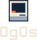
lockup-stacked-creamFor square and tall spaces: a splash, a poster, a sidebar.
76 × 82 · SVG · stacked-cream@2x.png · stacked-cream@4x.png · stacked-cream@8x.png


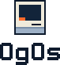
lockup-stacked-inkFor square and tall spaces: a splash, a poster, a sidebar.
76 × 82 · SVG · stacked-ink@2x.png · stacked-ink@4x.png · stacked-ink@8x.png


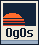
sunrise-screenThe hero lockup (from #101): the monitor with the sunrise on its screen and the name on its chin. Splash screens, covers, stickers.
39 × 45 · SVG · sunrise-screen@4x.png · sunrise-screen@6x.png · sunrise-screen@12x.png


widescreenFor wide, short spaces (from #102): banners and headers. The name is on the screen, so nothing else says it.
56 × 27 · SVG · widescreen@4x.png · widescreen@8x.png · widescreen@16x.png


desktop-iconThe computer labeled as a desktop labels it (from #108), in RetrOS System. On Desktop Blue only.
32 × 43 · SVG · desktop-icon@2x.png · desktop-icon@4x.png · desktop-icon@8x.png


The sun
sun-cornerThe sun rising in a bottom-left corner, centered on the corner. 48 x 32 pixels; scale by whole numbers and set it in the corner of a layout.
48 × 32 · SVG · sun-corner@4x.png · sun-corner@8x.png · sun-corner@16x.png


sun-domeThe whole half-sun, as on #101's screen: set it on a horizon, toward the left.
40 × 20 · SVG · sun-dome@4x.png · sun-dome@8x.png · sun-dome@16x.png


Examples
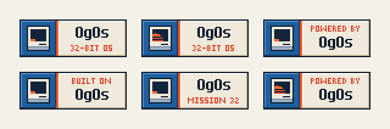
example-badge-wallThe Web Badge theme's range: the same 88 x 31 frame with different lines. Make new ones with tools/make.mjs badge.
640 × 212 · SVG · badge-wall.png · badge-wall@2x.png · source


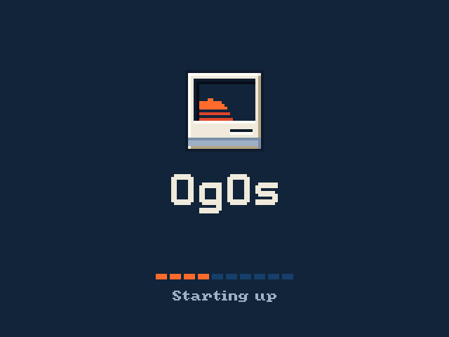
example-boot-splashShown while the OS starts: the screen's own dark, the desktop icon with its sunrise, the name and a progress bar.
640 × 480 · SVG · boot-splash.png · source


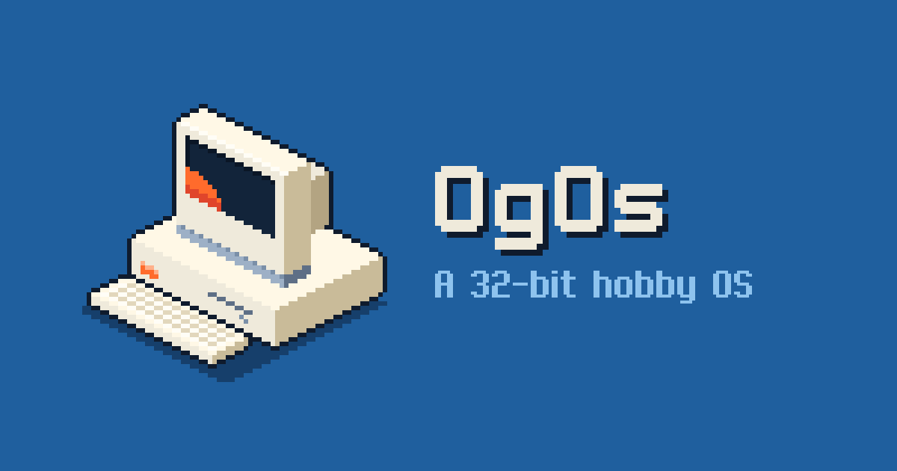
example-iso-heroA header or card in the Isometric theme: the desk set in the round, and the name in OgOs Display with its shadow.
1200 × 630 · SVG · iso-hero.png · source


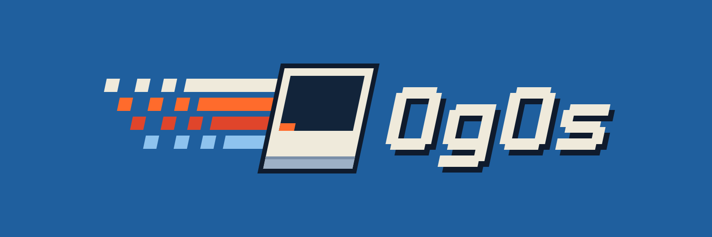
example-racing-bannerA wide header in the Racing Stripes theme: the racing lockup, big, on Desktop Blue.
1500 × 500 · SVG · racing-banner.png · source


example-readme-bannerThe top of the repository README: wide and short, so the widescreen lockup carries the name.
1280 × 320 · SVG · readme-banner.png · source


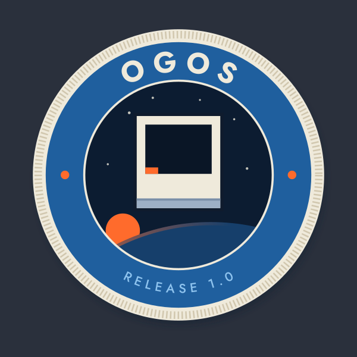
example-release-patchHow a patch marks an occasion: the round patch with a mission line of its own, shown as an object on charcoal.
600 × 600 · SVG · release-patch.png · source


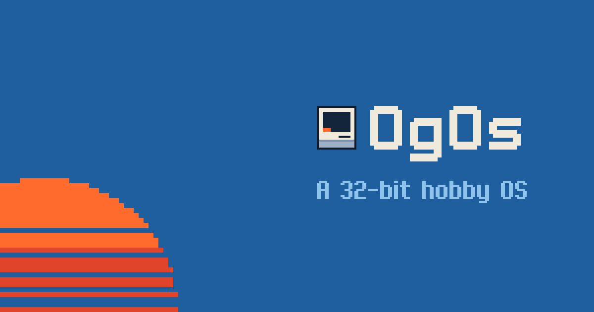
example-social-cardThe link preview for the site and repository: Desktop Blue, the sun in the corner, the horizontal lockup and one line.
1200 × 630 · SVG · social-card.png · source


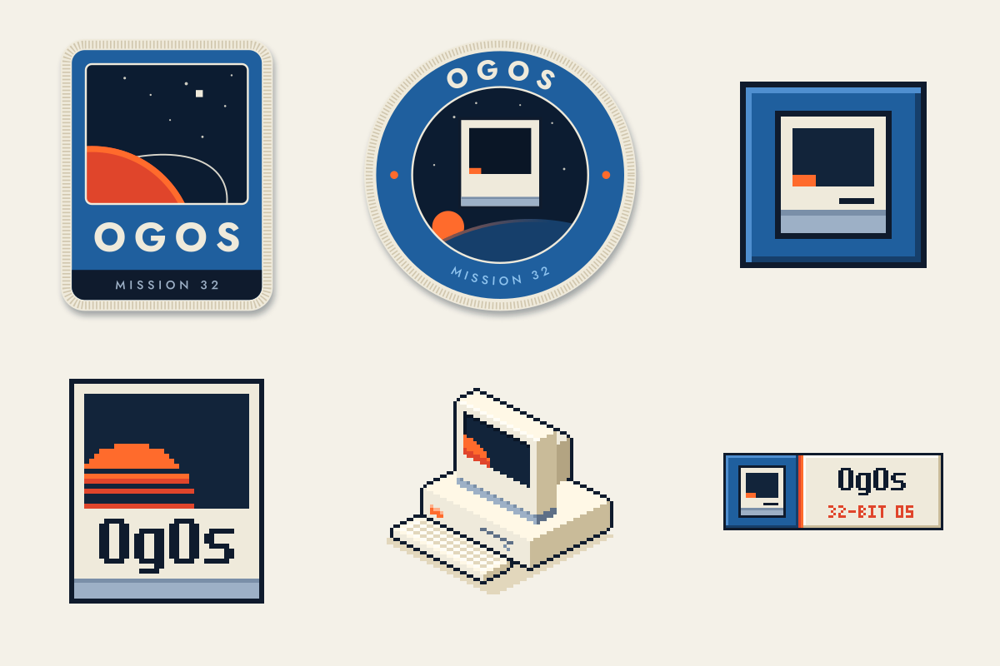
example-sticker-sheetHow the themes sit together: both patches, the badge, the app icon, the desk set and the sunrise screen, on paper.
1200 × 800 · SVG · sticker-sheet.png · source


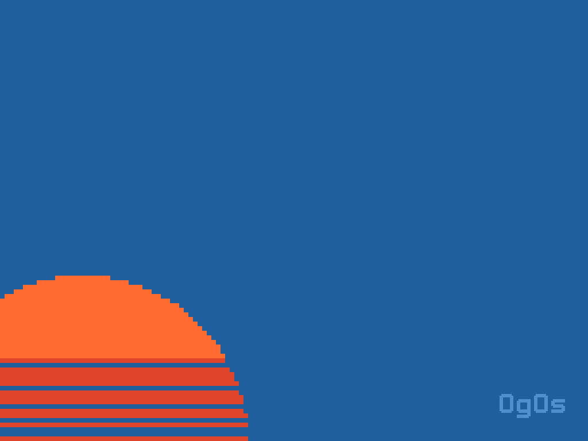
example-wallpaperThe OS's own desktop: Desktop Blue with the sun coming up at the lower left, and the name small in the corner.
1024 × 768 · SVG · wallpaper.png · source


Theme: Isometric
iso-monitor-blueThe monitor in the round, its shadow colored for a blue ground.
42 × 45 · SVG · monitor-on-blue@4x.png · monitor-on-blue@8x.png


iso-desk-set-blueThe whole computer, case, monitor and keyboard, with the sunrise on the screen and its shadow colored for a blue ground.
68 × 62 · SVG · desk-set-on-blue@4x.png · desk-set-on-blue@8x.png


iso-monitor-paperThe monitor in the round, its shadow colored for a paper ground.
42 × 45 · SVG · monitor-on-paper@4x.png · monitor-on-paper@8x.png


iso-desk-set-paperThe whole computer, case, monitor and keyboard, with the sunrise on the screen and its shadow colored for a paper ground.
68 × 62 · SVG · desk-set-on-paper@4x.png · desk-set-on-paper@8x.png


iso-monitor-sunFor scenes you build yourself, where you draw the floor.
38 × 44 · SVG · monitor-sun@4x.png · monitor-sun@8x.png


Theme: Mission Patch
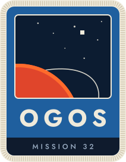
patch-monitorThe patch cut to the monitor's shape (from #106). Flat, for print and embroidery; add a shadow only when showing it as an object.
212 × 272 · SVG · monitor-patch.png · monitor-patch@2x.png · monitor-patch@4x.png


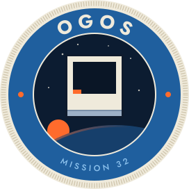
patch-roundThe round crew patch (from #107).
272 × 272 · SVG · round-patch.png · round-patch@2x.png · round-patch@4x.png


patch-round-iconThe round patch without its lettering, for 64 pixels and below.
64 × 64 · SVG · round-patch-icon-64.png · round-patch-icon-128.png · round-patch-icon-256.png


Theme: Web Badge
badgeAn 88 x 31 button. Use it at 1x, where it is crisp, or at whole multiples.
88 × 31 · SVG · badge.png · badge@2x.png · badge@4x.png


badge-sunAn 88 x 31 button. Use it at 1x, where it is crisp, or at whole multiples.
88 × 31 · SVG · badge-sun.png · badge-sun@2x.png · badge-sun@4x.png


badge-powered-byAn 88 x 31 button. Use it at 1x, where it is crisp, or at whole multiples.
88 × 31 · SVG · badge-powered-by.png · badge-powered-by@2x.png · badge-powered-by@4x.png


Theme: Racing Stripes
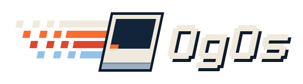
racingThe monitor leaning into speed with its stripes, and the name leaning with it (from #110). On Desktop Blue.
591 × 164 · SVG · racing.png · racing@2x.png · racing@4x.png


racing-iconThe racing mark in a square, for 64 pixels and up.
64 × 64 · SVG · racing-icon-64.png · racing-icon-128.png · racing-icon-256.png


Reference figures
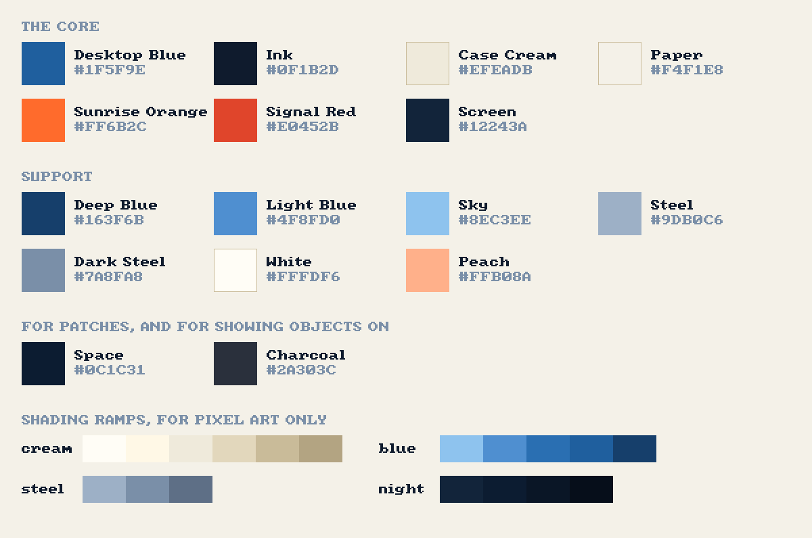
figure-paletteEvery color the kit uses, with its name and hex value.
1200 × 796 · SVG · palette.png


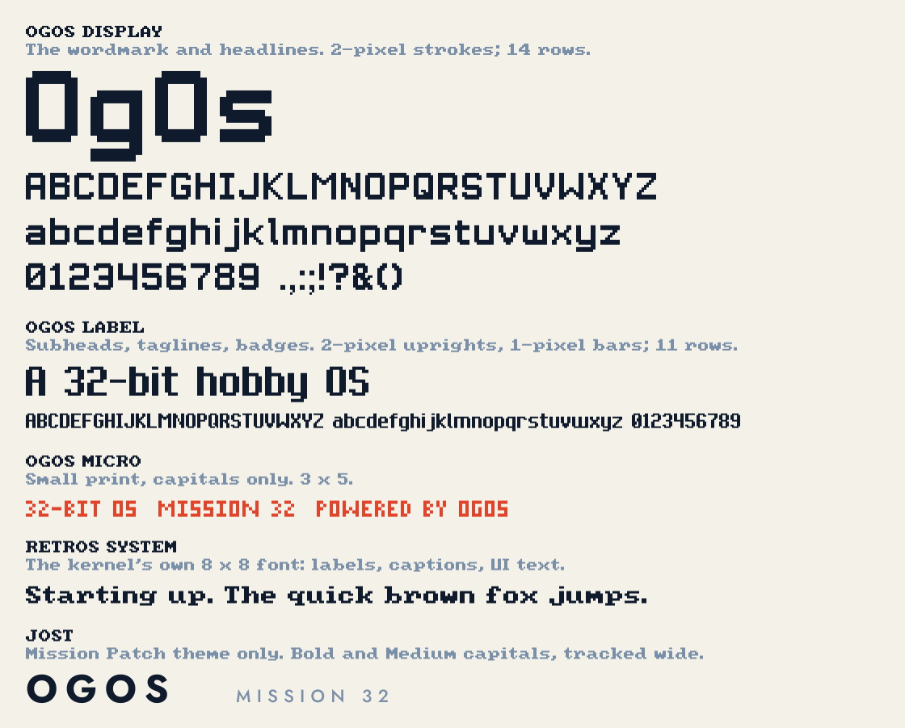
figure-typeThe four pixel faces and Jost, with what each is for.


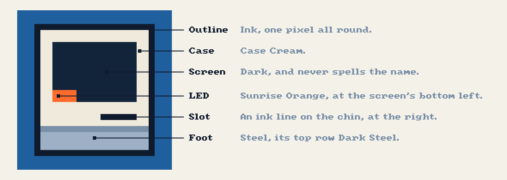
figure-anatomyThe parts of the monitor and their colors.
1180 × 420 · SVG · anatomy.png


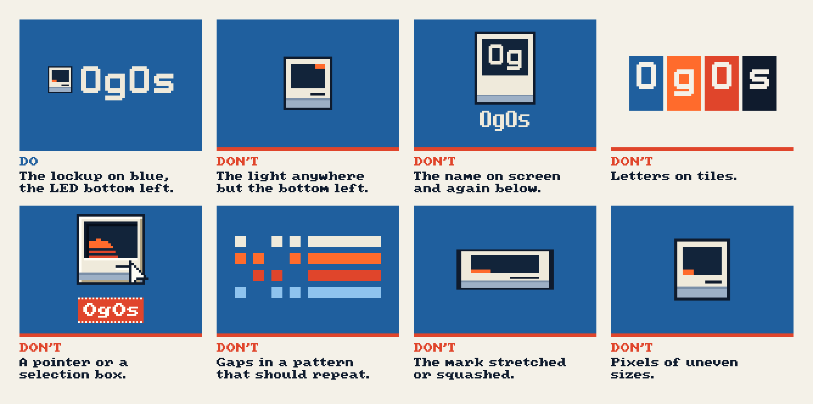
figure-dontsThe mistakes the feedback rounds ruled out.


Palette
- blue #1F5F9E
- ink #0F1B2D
- cream #EFEADB
- paper #F4F1E8
- orange #FF6B2C
- red #E0452B
- screen #12243A
- blueDeep #163F6B
- blueLight #4F8FD0
- sky #8EC3EE
- steel #9DB0C6
- steelDark #7A8FA8
- white #FFFDF6
- peach #FFB08A
- space #0C1C31
- charcoal #2A303C
- cream
- blue
- steel
- night